Due Date: 11:59pm on Monday, Sep 23, 2024 [START EARLY]
Fun with Filters and Frequencies! Submission Webpage (Additions in Blue)
Important Note: This project requires you to show many image results. However, the website submission size limit is 100 MB per student. We suggest using medium-size images (less than 0.8 MB per image) as your testing cases for all questions in this project.
Part 1: Fun with Filters
In this part, we will build intuitions about 2D convolutions and filtering.
Part 1.1: Finite Difference Operator
We will begin by using the humble finite difference as our filter in the x and y directions.

First, show the partial derivative in x and y of the cameraman image by convolving the image with finite difference operators D_x and D_y (you can use convolve2d from scipy.signal library). Now compute and show the gradient magnitude image. To turn this into an edge image, lets binarize the gradient magnitude image by picking the appropriate threshold (trying to suppress the noise while showing all the real edges; it will take you a few tries to find the right threshold; This threshold is meant to be assessed qualitatively).
Part 1.2: Derivative of Gaussian (DoG) Filter
We noted that the results with just the difference operator were rather noisy. Luckily, we have a smoothing operator handy: the Gaussian filter G. Create a blurred version of the original image by convolving with a gaussian and repeat the procedure in the previous part (one way to create a 2D gaussian filter is by using cv2.getGaussianKernel() to create a 1D gaussian and then taking an outer product with its transpose to get a 2D gaussian kernel).
-
What differences do you see?
Both the gradient magnitude and edge images derived from the Gaussian blurred image show that noise is significantly reduced and the edges appear thickened and more pronounced. This is due to the distribution of weights in the Gaussian kernel, which spreads peaks, smoothing outliers and extending edges.
Now we can do the same thing with a single convolution instead of two by creating a derivative of gaussian filters. Convolve the gaussian with D_x and D_y and display the resulting DoG filters as images.
Begin Solution Part 1
GRADIENT MAGNITUDE DESCRIPTION: Gradient Magnitude = sqrt((convolve(cameraman.png, D_x))^2 + (convolve(cameraman.png, D_x))^2). The convolution operation with D_x and D_y means that the pixel space on the image (same dimensions as original) now represents the weighted sum (in this case unweighted), in which (1, -1) translates to "how much change was there from the last pixel to this one." To get the magnitude, the result image must be positive and the sum of the changes, hence the square and square root operations.
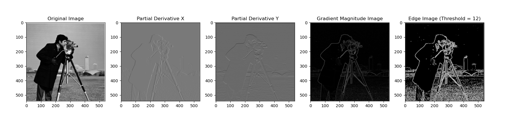
DESCRIPTION: Shown above are five images, from left to right: The original cameraman image, the partial derivative with respect to x (detects vertical edges), the partial derivative with respect to y (detects horizontal edges), the sum of squared differences, which represents changes (the whiter the pixel the higher the magnitude), and the edge image, with values binarized to show strong edges
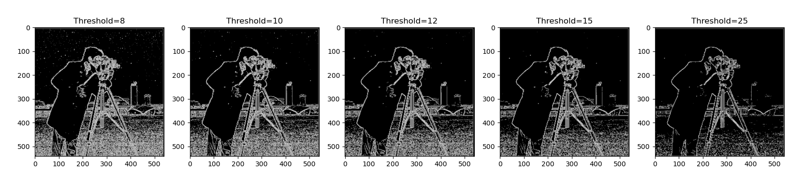
DESCRIPTION: To qualitatively determine the ideal threshold the highlights edges and reduces noise, a range of threshold values and their resultant edge images are shown. Although the threshold of 25 appears the "cleanest," it has significantly reduced or eliminated important edges, so a threshold of 12 is selected, which preserves edges in the foreground and background.
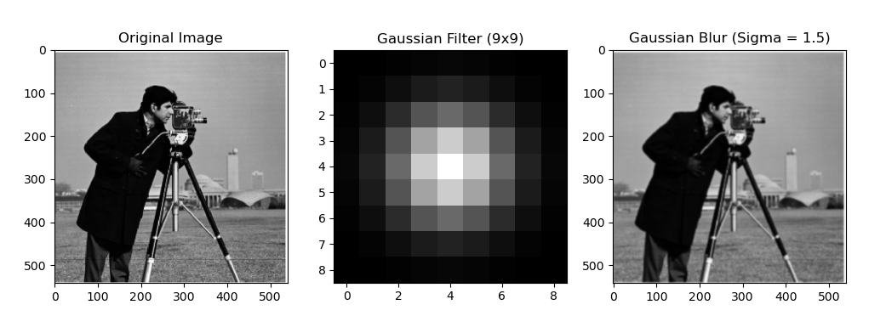
DESCRIPTION: After some qualitative testing with the Gaussian Filter, it was determined that a sigma value of 1.5 preserved the details of the image while eliminating artifacts such as aliasing and reducing localized peaks (as shown further down on the edge image).
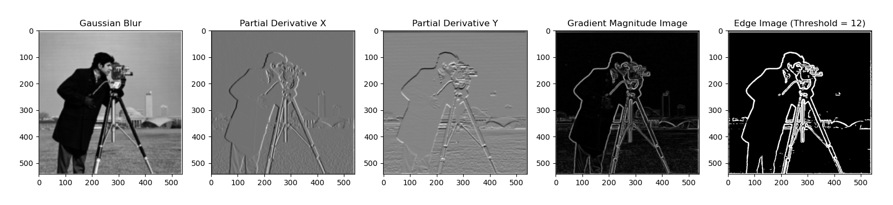
DESCRIPTION: Then, the procedure first done to the unaltered image is done to blurred image, and the first noticable difference is that there are greater "ridges" and "valleys" on the partial derivative of the blurred image, since the edges thicken as aliasing is significantly reduced
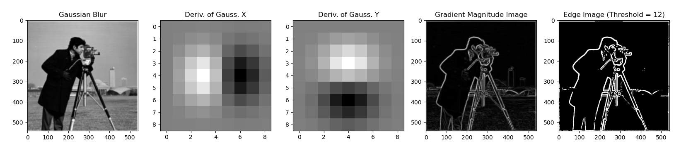
DESCRIPTION: For the third time the edge image generation procedure is done, the Gaussian blurred image is now convolved with the Dx and Dy derivatives of the original Gaussian filter two images above to get the gradient magnitude and edge image. As observed, the resulting edge image and the one in the plot directly above are nearly identical.
End Solution Part 1
Part 2: Fun with Frequencies!
Part 2.1: Image "Sharpening"
Pick your favorite blurry image and get ready to "sharpen" it! We will derive the unsharp masking technique. Remember our favorite Gaussian filter from class. This is a low pass filter that retains only the low frequencies. We can subtract the blurred version from the original image to get the high frequencies of the image. An image often looks sharper if it has stronger high frequencies. So, lets add a little bit more high frequencies to the image! Combine this into a single convolution operation which is called the unsharp mask filter. Show your result on the following image (download here) plus other images of your choice --

Also for evaluation, pick a sharp image, blur it and then try to sharpen it again. Compare the original and the sharpened image and report your observations.
When tested on an image with text, the text was recoverable, but the noise and contrast of the image was increased, an expected symptom of the Laplacian of Gaussian Filter due to its "valleys" that surround the center, which increases the gradient of the image
Begin Solution Part 2.1
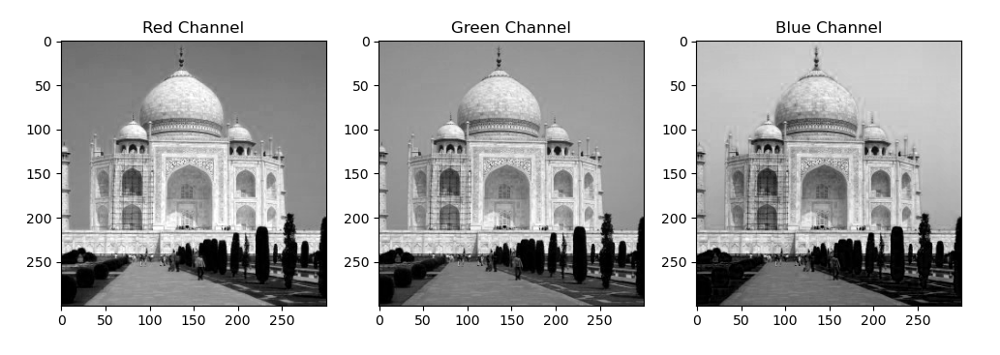
DESCRIPTION: In the first step of the process, the image is read and split into the three color channels
DESCRIPTION: Each channel is then blurred using a 9x9 Gaussian matrix with a sigma value of 2.6, which isolates the necessary fine details when used later
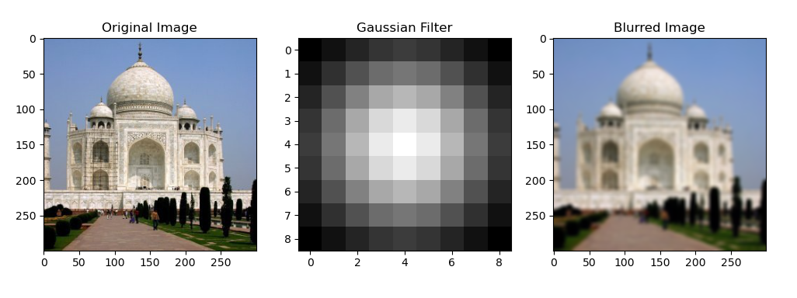
DESCRIPTION: Shown above is the original image, the Gaussian fitler used to blur the image, and the merged color channels of the blurred image
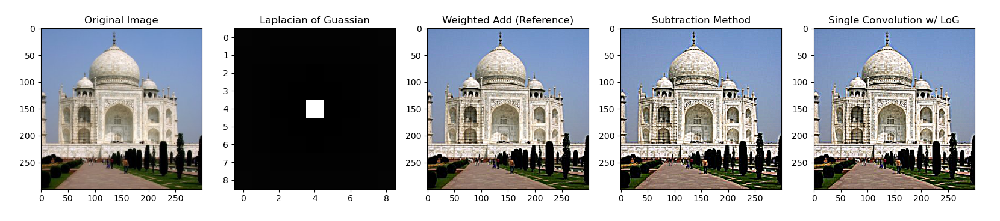
DESCRIPTION: Each step of the process taken to create the image is shown above. The original image is convolved with the Laplacian of Gaussian to get the first image from the right, and the adjacent image is the same operation done instead with a subtraction operation. The cv2.addWeighted operation is done as an alternate method using the using another equation: (alpha * img1) + (beta * img2) + gamma, with alpha, beta, and gamma being weights.
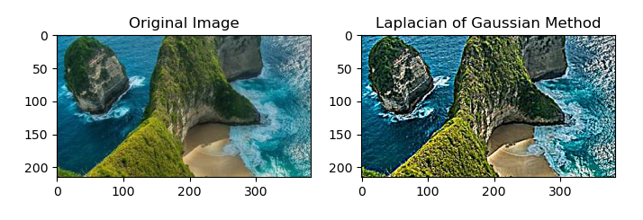
DESCRIPTION: Here is another example using the Laplacian of Gaussian filter to enhance the image in the same way that it was done on the rightmost image of the taj mahal above.
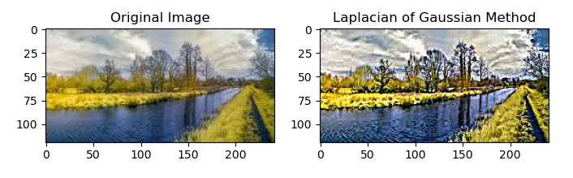
DESCRIPTION: On really low resolution images, there can be significant shape distortion of fine details, with horizontal and vertical lines from the convolution being visible.
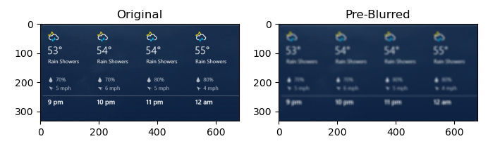
DESCRIPTION: Given an example with text, the image is blurred before it is given to the convolution function. This pre-blurred image will be given in place of a normal image.
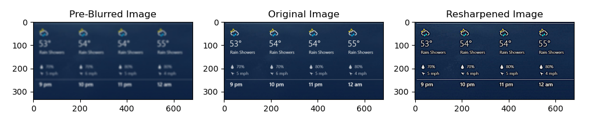
DESCRIPTION: The pre-blurred image has enough high frequencies removed that, without context, it would be difficult to process the text shown in the image. When the image is sharpened using the Laplacian of Gaussian filter, the text is now legible. However, there is signicant aliasing, since the sharp peak of the filter strengthens edges (increases pixel value difference) as opposed to smoothign them like a Gaussian.
End Solution Part 2.1
Part 2.2: Hybrid Images

(Look at image on right from very close, then from far away.)
Overview
The goal of this part of the assignment is to create hybrid images using the approach
described in the SIGGRAPH 2006 paper
by Oliva, Torralba, and Schyns. Hybrid images are static images that
change in interpretation as a function of the viewing distance. The basic idea is that high frequency tends
to dominate perception when it is available, but, at a distance, only the low
frequency (smooth) part of the signal can be seen. By blending the high frequency portion of one image with the low-frequency portion of another, you get a hybrid image that leads to different interpretations at different distances.
Details
Here, we have included two sample images (of Derek and his former cat Nutmeg) and some matlab
starter code that can be used to load two images and align them. Here is the python version. The alignment is important because it affects
the perceptual grouping (read the paper for details).
-
First, you'll need to get a few pairs of images that you want to make into
hybrid images. You can use the sample
images for debugging, but you should use your own images in your results. Then, you will need to write code to low-pass
filter one image, high-pass filter the second image, and add (or average) the
two images. For a low-pass filter, Oliva et al. suggest using a standard 2D Gaussian filter. For a high-pass filter, they suggest using
the impulse filter minus the Gaussian filter (which can be computed by subtracting the Gaussian-filtered image from the original).
The cutoff-frequency of
each filter should be chosen with some experimentation.
- For your favorite result, you should also illustrate the process through frequency analysis. Show the log magnitude of the Fourier transform of the two input images, the filtered images, and the
hybrid image. In MATLAB, you can compute and display the 2D Fourier transform with
with:
imagesc(log(abs(fftshift(fft2(gray_image)))))and in Python it's plt.imshow(np.log(np.abs(np.fft.fftshift(np.fft.fft2(gray_image)))))
- Try creating 2-3 hybrid images (change of expression,
morph between different objects, change over time, etc.). Show the input image and hybrid result per example. (No need to show the intermediate results as in step 2.)
Bells & Whistles
Try using color to enhance the effect.
Does it work better to use color for the high-frequency component, the
low-frequency component, or both? (0.07 cookie points)
For the images used in this project, the use of color did enhance the effect, avoiding the "muddiness" of grayscale hybrid images, which do not have the advantage of color to show fine details or to stand out from the background. In this project, both the low and high-frequency components used all three color channels, which did successfully enhance the effect, but required closer distances for the fine details and greater distances for the coarse details. However, whn looked at from the right distances (specified later), the effect is enhanced compared to a grayscaled image, especially since the images chosen done so with color scheme in mind.
To observe the color-enhanced effect, observe the images at really close and really far distances, not just those necessary to make out the different frequencies.
CORRECTION: The labels for "Low Freq. Image" and "High Freq. Image" are swapped. The leftmost image should be the "High Freq. Image" and the next image to the right should be the "Low Freq. Image"
Begin Solution Part 2.2
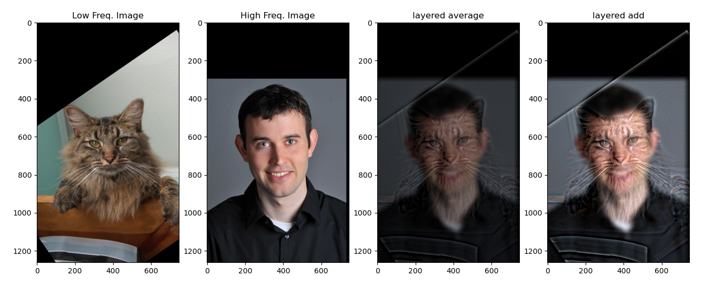
DESCRIPTION: Shown above is a successful example of hybridizing two images, where the images are aligned using the align_images() helper function, then filtered using the helper function filter(), which has a toggle for a low or high pass filter, and are then added/averaged to preduce two resultant images, both of which exhibit the desired effect when observed at different distances.
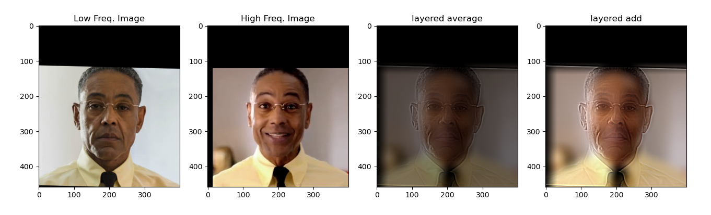
DESCRIPTION: Shown above is a successful example of hybridizing two images, where the images are aligned using the align_images() helper function, then filtered using the helper function filter(), which has a toggle for a low or high pass filter, and are then added/averaged to preduce two resultant images, both of which exhibit the desired effect when observed at different distances.
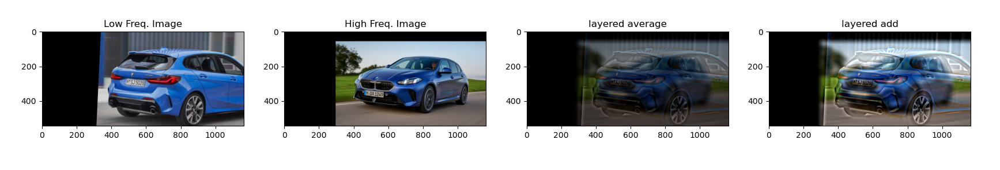
DESCRIPTION: Shown above is an unsuccessful example of hybridizing two images, where an attempt was made to align the headlights of one vehicle with the taillights of another, but the siza, opposite shape, and angle of the two images of the vehicle prevented a proper alignment.
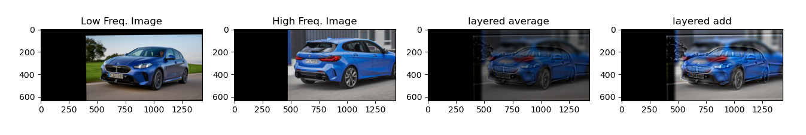
DESCRIPTION: Shown above is an unsuccessful example of hybridizing two images, where the images were flipped this time, which their roles as low and high frequency components switched. This still prevented a proper alignment, since the headlights and taillights of the vehicle are perceptually at different heights, as well as the fact that the vehicle does not have a symmetrical shape and is not at the same angle.
Step by step process and Log of Fourier Transform (2nd Additional Succesful example)
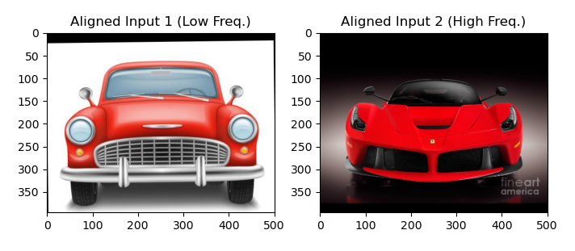
DESCRIPTION: Since the images will be hybridized in color, choosing iamges with the right color matching is important.
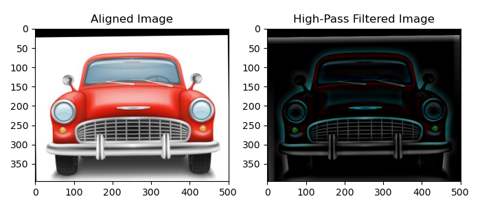
DESCRIPTION: In the first step, the high frequencies of the first image are extracted by subtracting the Gaussian-blurred image from the starting image
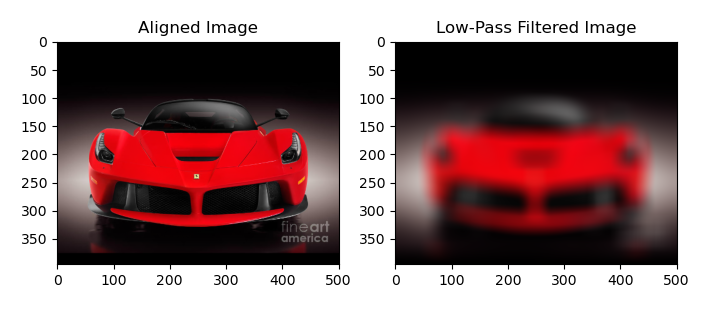
DESCRIPTION: In the second step, the low frequencies of the second image are extracted with a Gaussian blur filter.
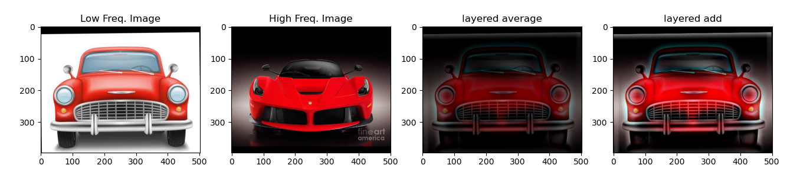
DESCRIPTION: The two extracted frequencies are then summed or averaged to produce the resultant image, with the only noticable difference being the intensity (brightness).
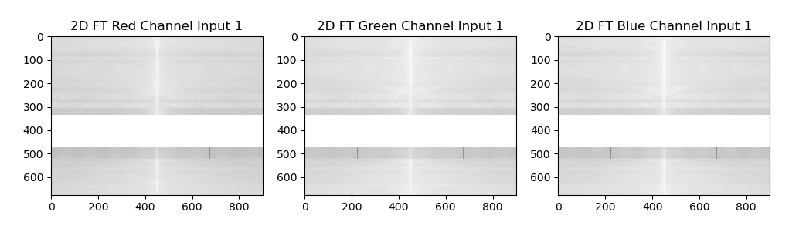
DESCRIPTION: All major gaps are due to the alignment. This image corresponds to the older red vehicle on the leftmost side of the previous image. Given that all three channels produce identical output, the predominant features (such as the vertical central line) of the Log Magnitude of the Fourier Transform are independent of color. Certain features of the old car, such as the two vertical slats on the bumpers, are visible on the graph.
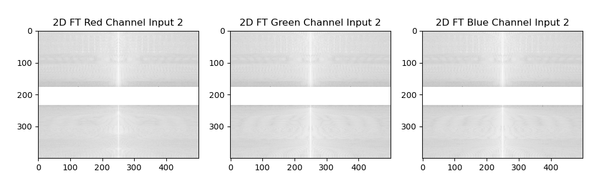
DESCRIPTION: All major gaps are due to the alignment. This image corresponds to the newer red vehicle on the right of the older vehicle, and the large white "gap" in the center is due to the fact that most of the image's color exists in that "gap." The vertical line down the center of the image means that there are a lot of peaks of wave functions that happen to be in the center, meaning that there is symmetry in the image (not necessarily perfect).
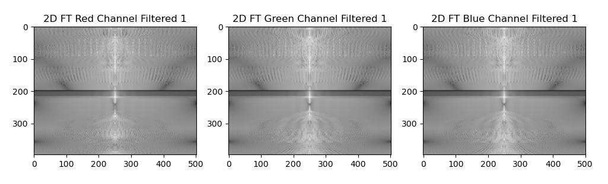
DESCRIPTION: All major gaps are due to the alignment. This image corresponds to the high pass filtered older vehicle, and immediately, it is noticable from the amplitude spectrum that there is a clear, discernable connection to the high-pass filtered image due to noticable due to the gray "handlebars" where the side mirrors should be. The various "squiggles" seen up and down the amplitude spectrum are present because they are no longer "hidden" additively within the low frequencies.
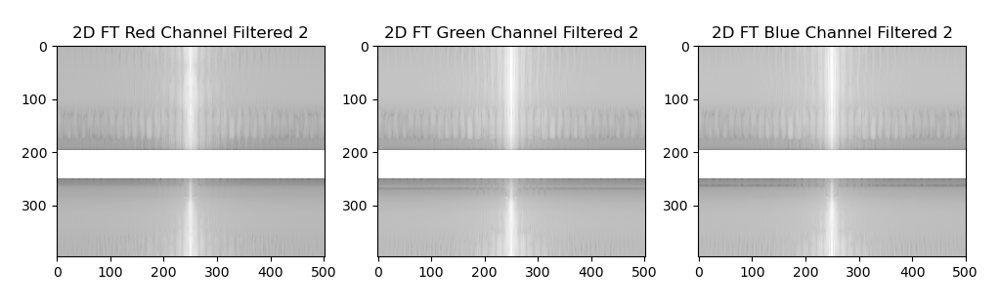
DESCRIPTION: All major gaps are due to the alignment. This image corresponds to the low-pass filtered newer vehicle, and is largely similar to the pre-filtered amplitude spectrum. However, there are noticable ridges, which are much larger than the aforementioned "squiggles" of the high-pass filtered image. The separation of frequencies has made them more visible instead of being "blended." Also, the vertical line in the center has "spread" since the fine peaks thinning that line have disappeared.
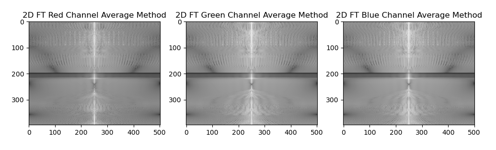
DESCRIPTION: All major gaps are due to the alignment. On their combined image, features from both the previously shown amplitude spectra are present, such as the "squiggles" discussed when referrring to the high-pass filtered image and the "splotches" or ridges seen on the low-pass filtered image since they are added or average, preserving and combining their patterns. As an example, the white gap on the low pass filtered image means that there is a section of the final amplitude spectrum (horizontal line near the center) where all the patterns are solely from the high-pass filtered image.
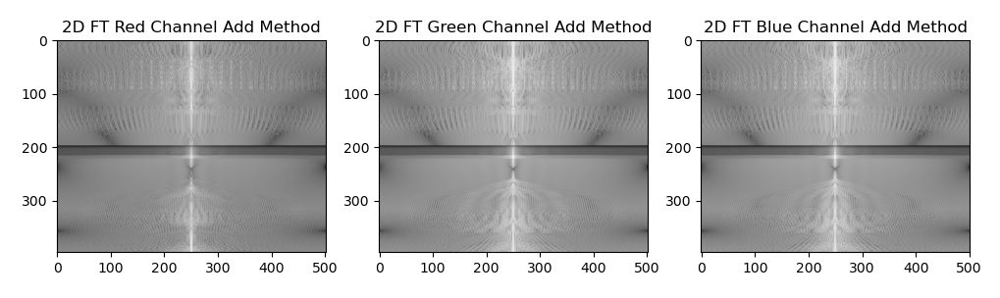
DESCRIPTION: All major gaps are due to the alignment. The only difference between these images and the ones directly above is the method of combining data between the images, which only affects the intensity (brightness).
End Solution Part 2.2
Multi-resolution Blending and the Oraple journey
Overview
The goal of this part of the assignment is to blend two images seamlessly using a multi resolution blending as described in the 1983 paper by Burt and Adelson. An image spline is a smooth seam joining two image together by gently distorting them. Multiresolution blending computes a gentle seam between the two images seperately at each band of image frequencies, resulting in a much smoother seam.
We'll approach this section in two steps:
- creating and visualizing the Gaussian and Laplacian stacks and
- blending together images with the help of the completed stacks, and exploring creative outcomes
Part 2.3: Gaussian and Laplacian Stacks

Overview
In this part you will implement Gaussian and Laplacian stacks, which are kind of like pyramids but without the downsampling. This will prepare you for the next step for Multi-resolution blending.
Details
-
Implement a Gaussian and a Laplacian stack. The different between a stack and a pyramid is that in each level of the pyramid the image is downsampled, so that the result gets smaller and smaller.
In a stack the images are never downsampled so the results are all the same dimension as the original image, and can all be saved in one 3D matrix (if the original image was a grayscale image).
To create the successive levels of the Gaussian Stack, just apply the Gaussian filter at each level, but do not subsample.
In this way we will get a stack that behaves similarly to a pyramid that was downsampled to half its size at each level. If you would rather work with pyramids, you may implement pyramids other than stacks. However, in any case, you are NOT allowed to use matlab's impyramid() and its equivalents in this project. You must implement your stacks from scratch!
- Apply your Gaussian and Laplacian stacks to the Oraple and recreate the outcomes of Figure 3.42 in Szelski (Ed 2) page 167, as you can see in the image above. Review the 1983 paper for more information.
Part 2.4: Multiresolution Blending (a.k.a. the oraple!)

Overview
Review the 1983 paper by Burt and Adelson, if you haven't! This will provide you with the context to continue. In this part, we'll focus on actually blending two images together.
Details
Here, we have included the two sample images from the paper (of an apple and an orange).
- First, you'll need to get a few pairs of images that you want blend together with a vertical or horizontal seam. You can use the sample
images for debugging, but you should use your own images in your results. Then you will need to write some code in order to use your Gaussian and Laplacian stacks from part 2 in order to blend the images together. Since we are using stacks instead of pyramids like in the paper, the algorithm described on page 226 will not work as-is. If you try it out, you will find that you end up with a very clear seam between the apple and the orange since in the pyramid case the downsampling/blurring/upsampling hoopla ends up blurring the abrupt seam proposed in this algorithm. Instead, you should always use a mask as is proposed in the algorithm on page 230,
and remember to create a Gaussian stack for your mask image as well as for the two input images. The Gaussian blurring of the mask in the pyramid will smooth out the transition between the two images. For the vertical or horizontal seam, your mask will simply be a step function of the same size as the original images.
- Now that you've made yourself an oraple (a.k.a your vertical or horizontal seam is nicely working), pick two pairs of images to blend together with an irregular mask, as is demonstrated in figure 8 in the paper.
- Blend together some crazy ideas of your own!
- Illustrate the process by applying your Laplacian stack and displaying it for your favorite result and the masked input images that created it. This should look similar to Figure 10 in the paper.
Bells & Whistles
- Try using color to enhance the effect. (0.07 cookie points)
Deliverables
For this project you must turn in both your code and a project webpage as described here and tell us about the most important thing you learned from this project!
The most important thing I learned from this project is that there are many ways to make one's image processing algorithms more efficient by chosing to convolve with intermedate matrices that will interact with the image, then multiply the image with the intermediate matrices, as opposed to convolving the filters with the images directly for each iteration of filtering a certain band of frequencies, which can cause significant slowdown.
Begin Solution Part 2.3 - 2.4
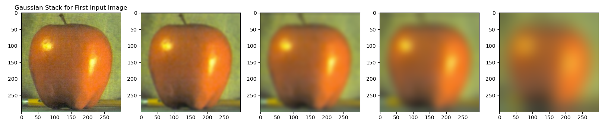
DESCRIPTION: This is an example of a Guassian stack which will later be used to generate a laplacian stack. Each time the loop is run, the previous image (left to right) is taken and blurred again with kernel and sigma that doubles from a starting value. All further mentions of "resizing-k" also mean sigma resizes proportionally.
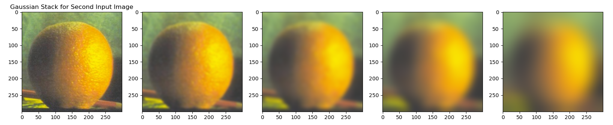
DESCRIPTION: This is an example of a Guassian stack which will later be used to generate a laplacian stack. Each time the loop is run, the previous image (left to right) is taken and blurred again with kernel and sigma that doubles from a starting value.
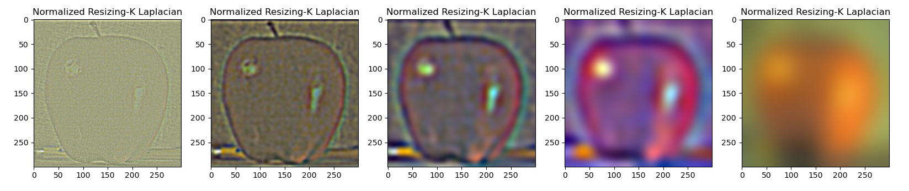
NOTE: "part1.1.py" will not generate the 8 horizontal Laplacian stacks below, these were interesting results (and therefore included) from experimenting with normalization, k-size and sigma size, and visual enhancements with a constant value. The code that generated these is now broken and commented out.
DESCRIPTION: All Laplacian stacks shown below (except for those the resemble figure 3.42) will be enhanced by 0.4 (out of max 1) if they are not normalized. This is a normalized Laplacian stack, which means the images generated at each step are taken and normalized using the method (value - min) / (max - min). The resizing k-value means that the kernel size grows with each iteration to filter out more frequencies for more visibility.
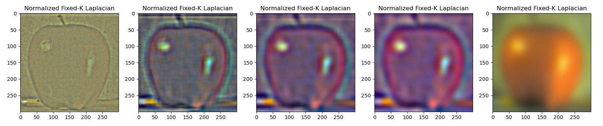
DESCRIPTION: This is a normalized Laplacian stack, which means the images generated at each step are taken and normalized using the method (value - min) / (max - min). The fixed k-value means the kernel size remains the same regardless of iteration.
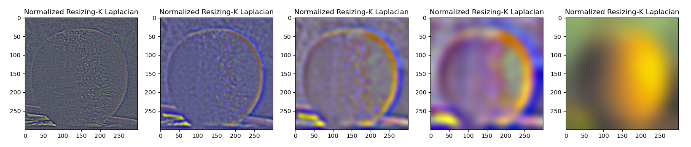
DESCRIPTION: This is a normalized Laplacian stack, which means the images generated at each step are taken and normalized using the method (value - min) / (max - min). The resizing k-value means that the kernel size grows with each iteration to filter out more frequencies for more visibility.
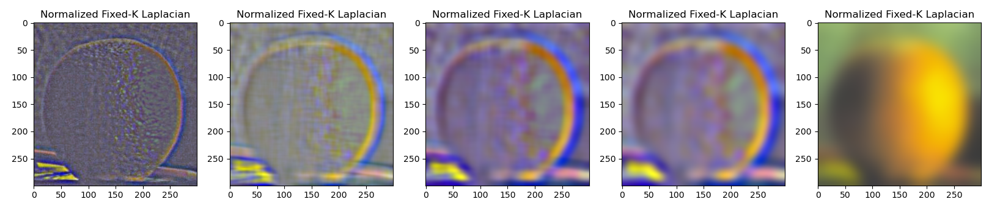
DESCRIPTION: This is a normalized Laplacian stack, which means the images generated at each step are taken and normalized using the method (value - min) / (max - min). The fixed k-value means the kernel size remains the same regardless of iteration.
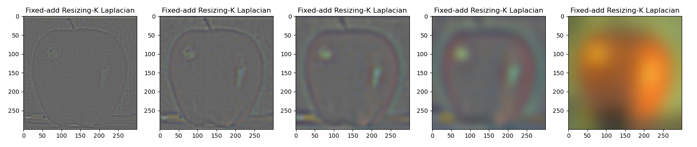
DESCRIPTION: This Laplacian stack is non-normalized, so there will be less visibility on each level, but this will be more accurate to what the algorithm sees as it computes the blended image. All the previous statements about the stack's other properties still apply.
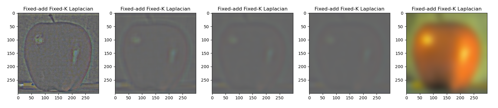
DESCRIPTION: This Laplacian stack is non-normalized, so there will be less visibility on each level, but this will be more accurate to what the algorithm sees as it computes the blended image. All the previous statements about the stack's other properties still apply.
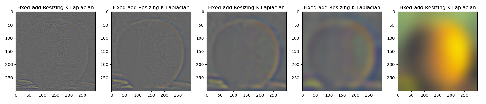
DESCRIPTION: This Laplacian stack is non-normalized, so there will be less visibility on each level, but this will be more accurate to what the algorithm sees as it computes the blended image. All the previous statements about the stack's other properties still apply.
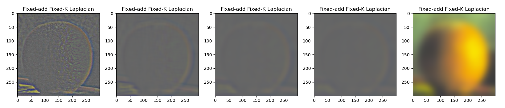
DESCRIPTION: This Laplacian stack is non-normalized, so there will be less visibility on each level, but this will be more accurate to what the algorithm sees as it computes the blended image. All the previous statements about the stack's other properties still apply.
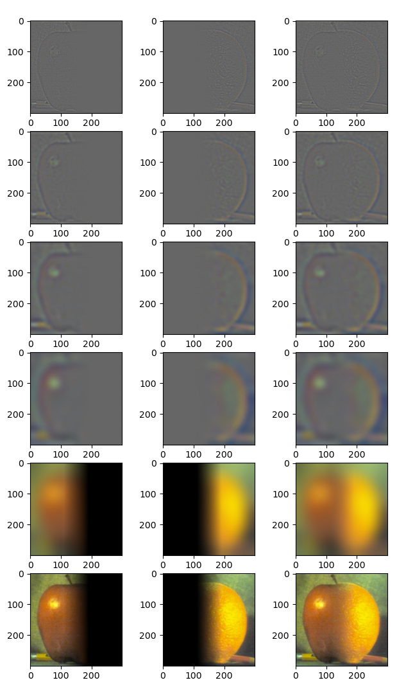
DESCRIPTION: Like 3.42, the image above shows three Laplacian stacks, one with the separate images and their masks, and one with the blended image to show how each frequency is combined for a smooth edge after the mask (at each stack level) has been convolved with the resizing or fixed-k gaussian filter.
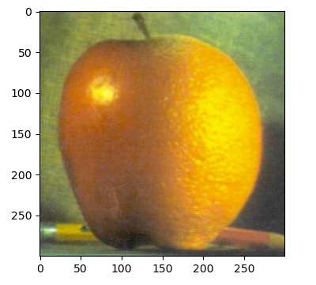
DESCRIPTION: This is a larger photo of the resulting image. The original mask is a binarized seam split down the middle, which is then convolved with a resizing or fiked-k gaussian to generate the masks that will be used for the image addition at each level.
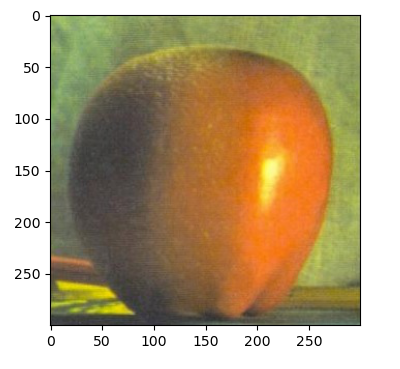
DESCRIPTION: This is the result with an inverted vertical seam mask.
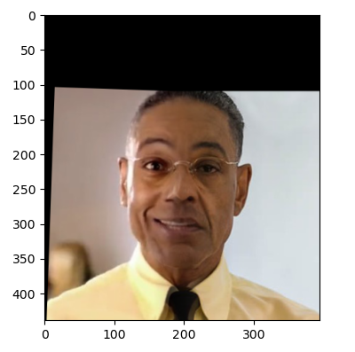
DESCRIPTION: Another example, where two faces with differing expressions are merged together with a vertical seam mask.
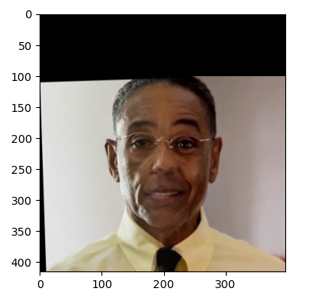
DESCRIPTION: Essentially the same as the previous image, but with an inverted vertical seam mask.
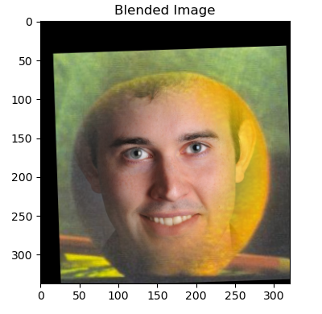
DESCRIPTION: This image uses an irregular mask to blend a face of a person and the image of the orange. The "obvious" line visible is the orange itself, and the yellow tinge on the face on only once side shows the direction of the convolution with the Gaussian.
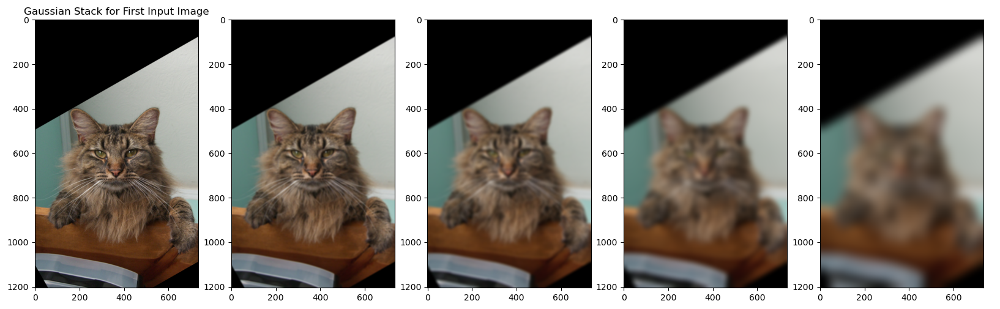
DESCRIPTION: This is a step by step rundown of using an irregular mask to blend Nutmeg and Derek. This is nutmeg's Gaussian stack.
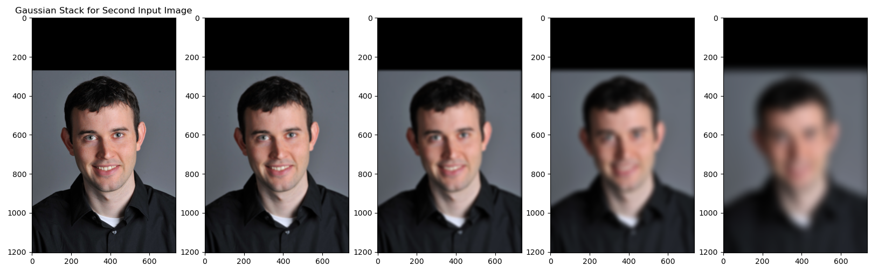
DESCRIPTION: This is Derek's Gaussian stack, to be used later to generate the Laplacian stack
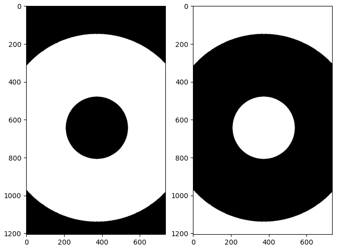
DESCRIPTION: This is the mask that will be used to blend the images together. Can you guess the result?
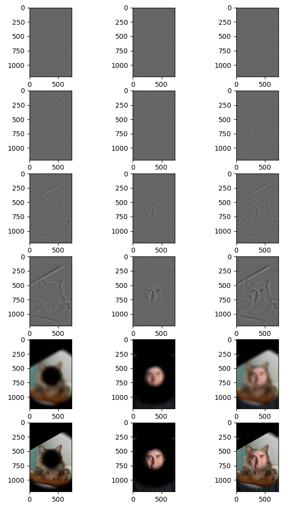
DESCRIPTION: This is a demo of Laplacian stacks combined with the mask matrices for each level, as well as the different frequencies of the final result.
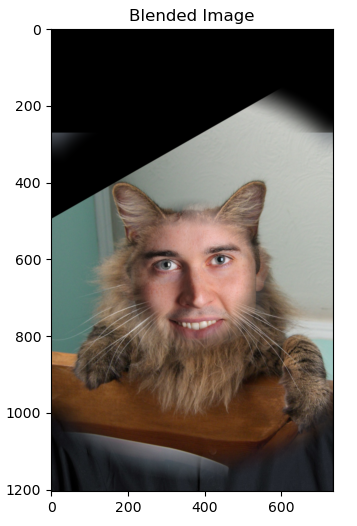
DESCRIPTION: This is the final result of blending Derek and Nutmeg.
End Solution Part 2.3 - 2.4
Scoring
The first part of the assignment is worth 30 points. The following things need to be answered in the html webpage along with the visualizations mentioned in the problem statement. The distribution is as follows:
- (15 points) Include a brief description of gradient magnitude computation.
- (15 points) Answer the questions asked in part 1.2
The second part of the assignment is worth 65 points, as follows:
- (20 points) for the implementation of all four parts of the project.
- The following are the points for the project html page description as well as results:
- (15 points) for the Unsharp Masking: Show the progression of the original image to the sharpened image for the given image and an image of your choice.
- (5 points) for hybrid images and the Fourier analysis;
- (5 points) for including at least two hybrid image examples beyond the first (including at least one failure);
- (15 points) for multiresolution blending;
- (5 points) for including at least two multiresolution blending examples beyond the apple+orange,
one of them with an irregular mask.
5 points for clarity. This includes the quality of the visualizations, the clarity of the explanations, and the overall organization of the webpage.
For this project, you can also earn up to 0.36 extra cookie points for the Bells & Whistles mentioned above or suggest your own extensions (check with prof first).
Cookie Points Policy:There will be opportunities to complete quiz-drop “cookie points” on projects. For every full cookie you obtain, 1 quiz can be dropped from your average. You can earn up to 2 cookies, and only integer-amount of cookies can be redeemed (no fractions). Please note that the total number of cookie points available in this project is 0.50 points.
Acknowledgements
The hybrid images part of this assignment is borrowed
from Derek Hoiem's
Computational Photography class.
 Programming Project #2 (proj2)
Programming Project #2 (proj2){kind=link}